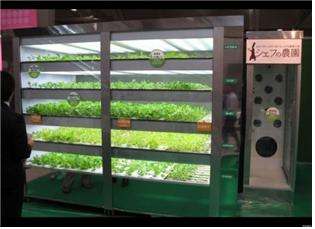

넥타이 자판기

공식적인 비즈니스 미팅 자리에 가야하거나 기존에 착용했던 넥타이에 커피를 쏟아 더러워진 경우처럼 넥타이가 급하게 필요한 경우가 있다 이때 이용할 수 있도록 넥타이 자판기가 존재한다.
신선한 농작물
이 자판기 안에서는 상추 같은 농작물을 단순 보관만 하는 것이 아니라, 빛과 물이 자동으로 조절되어 농작물이 자랄 수 있는 환경이 제공된다. 전체 60개의 싹이 한번에 성장할 수 있고, 년 단위로 2,000개까지 판매 될 수 있다고 한다.
그 외 자판기들
|
|
|
|
|
|
관련 영상